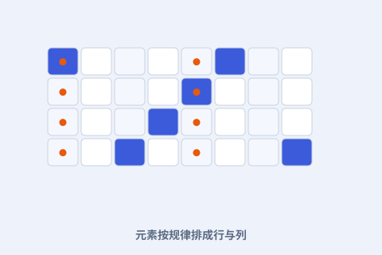

一、元素曾是一盘散沙
到 19 世纪中叶，已知元素已有六十多种，各自的性质像互不相关的谜。化学家们渴望一种能把它们串起来的秩序。

二、按原子量排队
门捷列夫把元素按原子量由小到大排成一列，再让性质相近的折到同一纵列。横看、竖看，规律都浮现出来。
三、同一列，是一家
他把“同一列元素性质相似”当成表的核心：碱金属在一列、卤素在另一列。这张表从此成了化学的“通讯录”。
四、为什么了不起
在此之前，元素是孤立记忆的；有了表，新元素该有什么性质，居然可以“查表推断”。化学第一次有了可预测的结构。